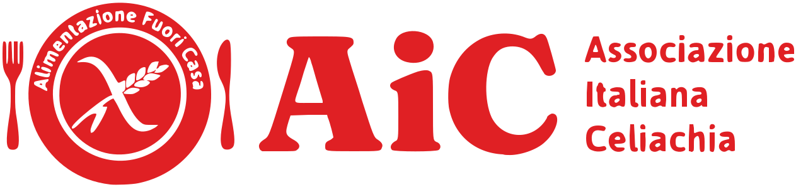
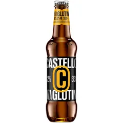
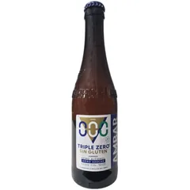

- Home
- Senza glutine
Senza glutine
Senza glutine. Con tutto il resto
Chi è celiaco o intollerante al glutine ci sceglie per un motivo semplice: la nostra pizza senza glutine è buona davvero. Morbida, saporita, mai stopposa. E nasce in un laboratorio tutto suo.

Programma AIC
Attenti e consapevoli
Punto Pizza aderisce al programma AIC Alimentazione Fuori Casa. Siamo informati sulle esigenze alimentari delle persone celiache e sull’importanza di una corretta gestione del senza glutine. Il nostro impegno è offrire un servizio attento e consapevole, per permettere ai nostri clienti di gustare la pizza senza glutine con maggiore tranquillità e fiducia.
Come la prepariamo
Un laboratorio tutto suo
Per chi è celiaco, una pizza buona non basta: deve essere anche sicura. Per questo il senza glutine da noi ha spazi e regole a parte.
Laboratorio dedicato
Le pizze senza glutine si preparano in uno spazio separato dal resto della cucina.
Ingredienti e attrezzi separati
Farine, condimenti e utensili per il senza glutine non si mescolano con quelli dell’impasto classico.
Cottura separata
Il forno per il senza glutine è separato, per evitare il contatto con le farine di grano.
Lo stesso gusto
Stessa cura e stessi ingredienti scelti: cambia l’impasto, non il piacere della pizza.
Hai una celiachia o un’allergia grave? Scrivilo nelle note dell’ordine, oppure chiamaci allo 045 862 2340 prima di ordinare: ti diciamo esattamente come prepariamo la tua pizza.
Chi l’ha provata
Lo dicono loro
-
5 stelle su 5
Ho aspettato quasi un anno prima di lasciare questa recensione, perché volevo essere certa. Mia figlia è celiaca e qui ha finalmente trovato una pizza senza glutine che ama davvero: morbida, gustosa e mai stopposa. Per noi è diventata la pizzeria di fiducia!
-
5 stelle su 5
La pizza senza glutine è la più buona di tutta Verona, morbida e molto gustosa. Anche le pizze con impasto regolare sono davvero ottime. Consegna puntuale e ragazzi gentilissimi! Super top!
-
5 stelle su 5
Fantastici, pizza senza glutine ottima e anche le pizze con impasto normale sono buonissime! Super gentili e organizzati: ho chiamato per aggiungere una bibita alla consegna e il titolare me l’ha offerta direttamente!
Da bere
Anche la birra
-

Birra senza glutine 33 cl
3,50 €Bottiglia 33 cl
-

Ambar Triple Zero
3,50 €Birra analcolica senza glutine, 0% alcol e 0 zuccheri.
Domande frequenti
Domande e risposte
Le pizze senza glutine sono adatte ai celiaci?
Aderiamo al programma AIC Alimentazione Fuori Casa e le prepariamo in un laboratorio dedicato, con ingredienti e attrezzi separati e cottura separata, proprio per evitare contaminazioni. Se hai una celiachia o esigenze particolari, chiamaci prima di ordinare: ti spieghiamo come gestiamo la tua pizza.
Come ordino una pizza senza glutine?
Dall’app Punto Pizza: scegli la pizza e, come impasto, «senza glutine». Puoi ordinare anche per telefono allo 045 862 2340. Scrivi sempre nelle note che sei celiaco.
Posso ordinare pizze normali e senza glutine insieme?
Sì: nello stesso ordine puoi avere pizze con impasti diversi, così mangia bene tutta la famiglia.
Avete anche la birra senza glutine?
Sì: la birra senza glutine in bottiglia da 33 cl e la Ambar Triple Zero, analcolica e senza glutine.
Pizza per tutti.
Celiaci e non, nello stesso ordine. Dall’app hai 5 € di sconto sul primo ordine.